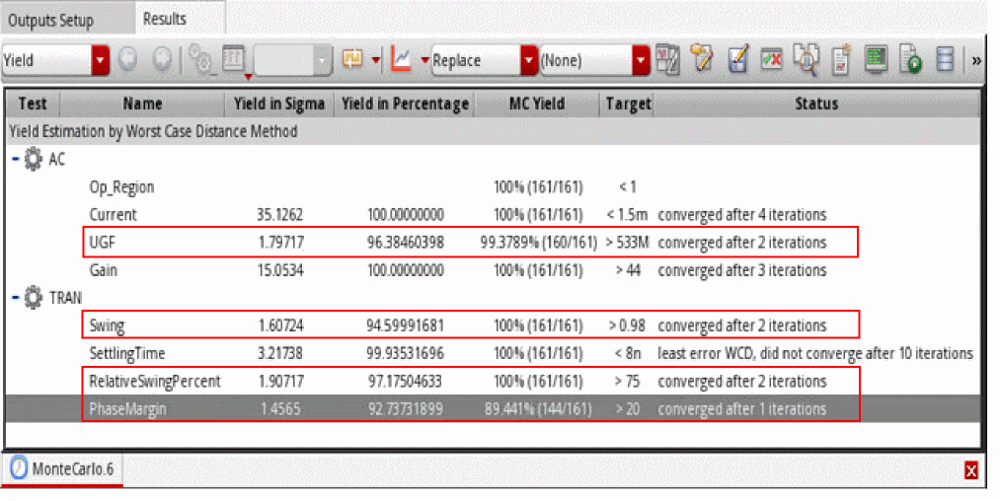
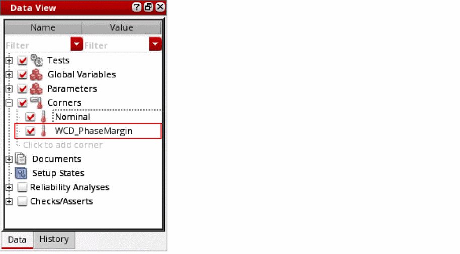
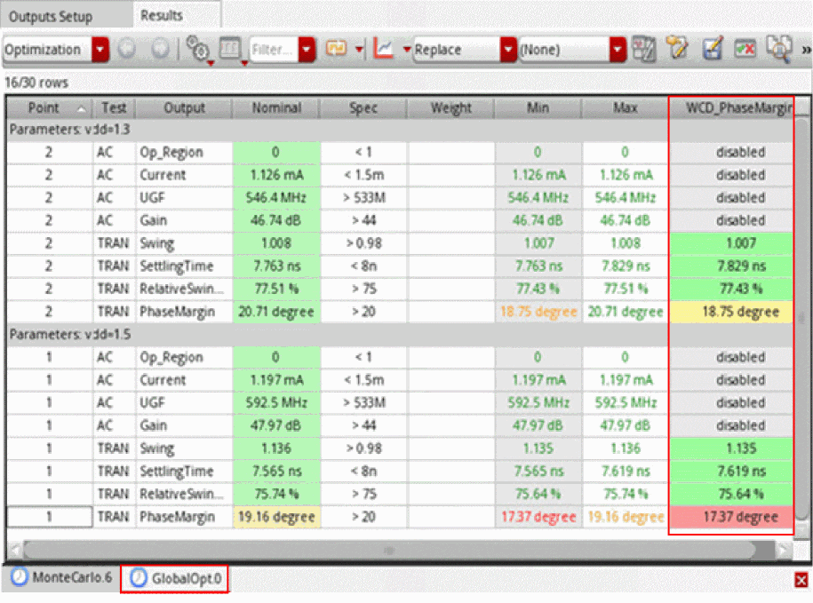
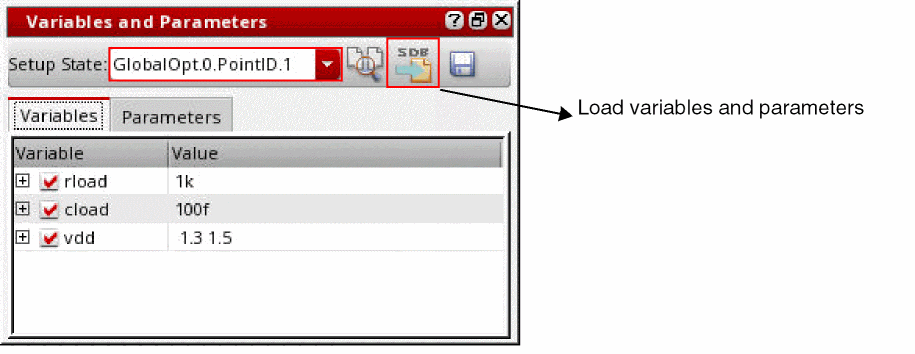

Creating Statistical Corners from the Worst-Case Distance Method
If you run Monte Carlo for a design without skipping the specifications that have yield of less than 3 sigma or 99.86%, the results may show specifications that have yield value less that 3 sigma.
In the following example, the Monte Carlo yield for the specifications UGF, Swing, RelativeSwingPercent, and PhaseMargin is less than 3 sigma.

To improve the yield for a specification, you can create a statistical corner based on the Worst- Case Distance (WCD) point of the specification.
-
In the Yield view of the Worst-Case Distance results, right-click a specification, and then select either Create Corner (Specify Yield in Sigma) or Create Corner (Specify Yield in Percentage).
The High Yield Estimation Corner form opens.
-
In the Specify corner sigma field, specify the sigma value to which you want to extend the WCD point. If you selected Create Corner (Specify Yield in Percentage) in step 1, specify the target yield value to be achieved in percentage.
-
Click OK to create the statistical corner.
The statistical corner is created with the name WCD_specification_name.
 -
Enable this corner and run global optimization on the design.
The results for the new statistical corners are displayed.
 -
From the results of the optimization run, right-click a design point, and select Save variable and parameter values to Setup State to save the values of variables and parameters from that point into a setup state.
The values of all the variables and parameters for this design point are saved as a state named as history_name.PointID.pointID. For example, GlobalOpt.0.PointID.1. -
Open the Variables and Parameters assistant and select this setup state from the Setup State drop-down list.
 - Click Load variables and parameters.
-
Run the Monte Carlo simulation again using the same setup.
The results show significant improvement in the yield and the worst case distance values.
Related Topics
The Worst-Case Distance Method
Yield View of the Worst-Case Distance Method
Return to top